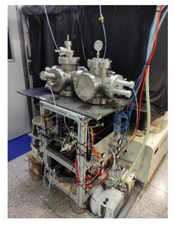

Environmental Chemistry • Aerosol Science • Photochemistry
Investigation of photochemical aerosol formation and particle growth using an OFR185 oxidation flow reactor, with emphasis on converting small aerosol populations into larger and more readily removable particles.
This project investigated the growth of aerosol particles from industrially relevant precursor gases using an OFR185 oxidation flow reactor.
The effects of relative humidity, UV irradiation, precursor-gas composition, temperature, ammonium sulfate seed particles, and pulsed-laser irradiation were examined under controlled conditions.
The overall objective was to promote aerosol growth beyond the submicron size range and generate larger particles that may be more readily removed using conventional industrial filtration technologies.

Aerosol-growth experiments were carried out using an OFR185 oxidation flow reactor designed to simulate highly oxidative atmospheric conditions.
The reactor was equipped with UV lamps emitting at 185 and 254 nm to generate reactive oxidizing species and drive photochemical conversion of precursor gases.
Gas composition, flow rate, humidity, temperature, irradiation conditions, and aerosol particle-size distributions were controlled and monitored during the experiments.